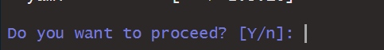
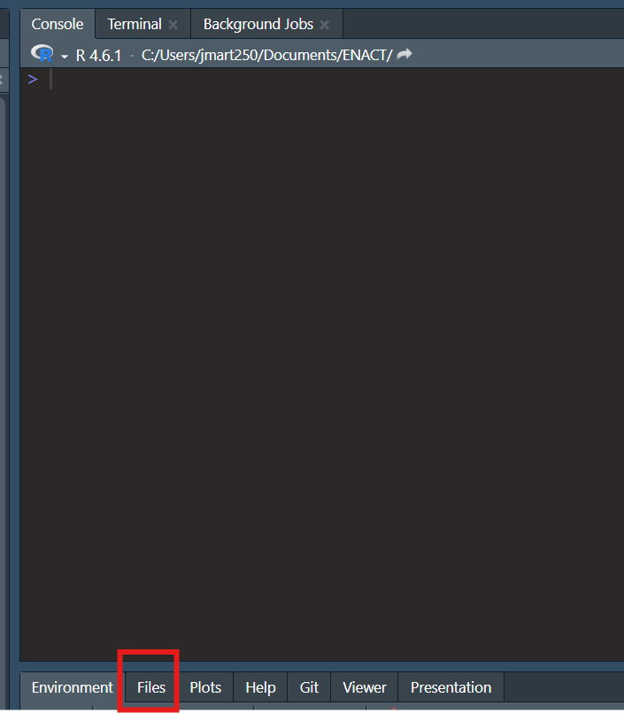
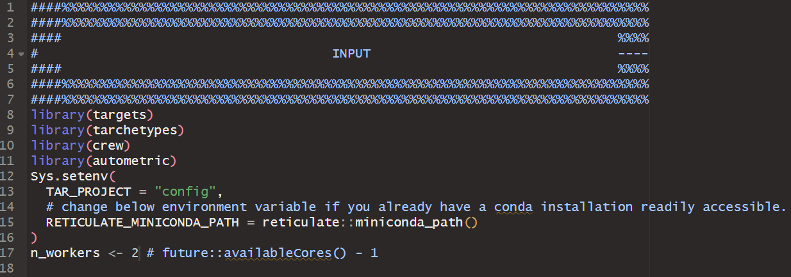
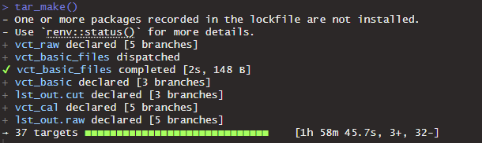
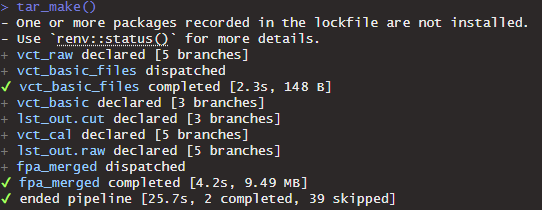
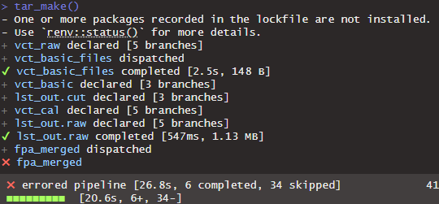

Last Update: 2026-09-25
Before continuing, please ensure you have set up your computer according to vignette("WAVES#preliminary-setup").
Configuration Pipeline
renv
-
If you are continuing straight from
vignette("WAVES#preliminary-setup"), then go to Step 2.If not, Open your FIle Explorer application and navigate to where you downloaded the WAVES repository.
In the WAVES repository, open the “WAVES.RProj” file. This will automatically open the RStudio IDE.
Click anywhere within the Console pane. The blinking cursor should now appear in the Console pane.
Type
renv::restore()in the Console pane and then press the “Enter” key. This will run therenv::restore()function.-
In the Console pane, you will see a bunch of text appear. At the bottom it will ask if “Do you want to proceed?”. Type “Y” and press the “Enter” key.

- This will download all the R software packages needed for the WAVES repository. It will take a while.
_targets_config.R
-
Navigate to the Files pane within Rstudio (located either in the bottom right area of the RStudio window if you haven’t changed the pane layout in “Global Settings”). Click on “_targets_config.R” to open it. This will open the “_targets_config.R” script within the Source pane in the top left area of your RStudio window.

- Alternatively, open “_targets_config.R” script with the system File Explorer. It should open within the Source pane of RStudio.
-
Within the “INPUT” section of the “_targets_config.R” script, check the following:

-
RETICULATE_MINICONDA_PATH: The path to an existing conda installation or where you want a new minconda distribution to be installed.- If this is changed, please ensure there are no spaces within the file path
-
NOTE: that if the WAVES directory is located under another directory with the names
bash,data,logs,media,models,quarto,R,renvorreports, the config pipeline will install miniconda underneath the corresponding folder in the WAVES directory.- For example, if the WAVES directory was installed under “/data/martinez/”, then miniconda will be installed in “/data/martinez/WAVES/data/martinez/r-miniconda”
-
n_workers: The default is 2 workers, meaning 2 processes of the pipeline will run in parallel of each other.-
n_workersshould always be at least 2! - If your operating system has more RAM and cores available, feel free to increase the number of workers, with the max being one less than the number of cores available of your system (
future::availableCores() - 1). In testing, each worker typically requires 2-3GB of memory.
-
-
Running the pipeline
If any changes were made to the script, save the script with the keyboard shortcut “Ctrl + s”.
Run all the code within the “INPUT” section (Line 8 - Line 17) by highlighting these lines and then pressing the “Enter” key. Save the script with the keyboard shortcut “Ctrl + s”.
-
Bring the blinking cursor to the Console pane and run
tar_make(). The “configuration” pipeline is now running, which will print messages out in the Console like the below image.
The “configuration” pipeline is:
Downloading and installing non-R software
Running the code against “configuration” data included within the WAVES repository to ensure code is running properly
This will take awhile! On a potato computer, it took 15-24 hours!
If the repository is being ran on a local computer, it is almost mandatory that no other work be done while the pipeline is running.
-
Once the pipeline is complete the console should say “ended pipeline” with how long it took.

Or it may error like so:

At least
miniconda_summary_fileshould be completed, allowing you to move on to step 11. -
A “summary_miniconda_config.html” will have been created under the “reports” folder of the main WAVES repository. Open the .html file and check:
The Miniconda configuration is good, where status is not “Unsuccessful installation”.
-
No packages/modules are highlighted red for each environment.
- For a environment, the Modules message may say “Modules installated do not completely match WAVES configuration”. This is expected with slight changes in package/module versions within each environment, and are highlighted yellow. This shouldn’t impact pipeline processes or computations, but are still noted to assist with diagnosing potential problems.
If any red appears, please open a Github issue and attach the .pdf of “summary_miniconda_config” or screenshots of which methods/installations are red.
If the config pipeline errored, please post on issue on Github following the convention set forth under Posting an Issue on GitHub TODO article.
If the pipeline successfully completed, a “summary_pipeline_config.html” file will have been created under the “reports” folder of the main WAVES repository. Open the file and follow the directions stated within the report.
If the “summary_pipeline_config.html” indicates no errors, then the WAVES code is working properly on your computer! Woo.
If the “summary_pipeline_config” report is red for any reason, please post the issue with the title as “Config - Summary Report - [Quick Description]” with the .pdf or screenshots attached to the issue.
From step 14, if there are no errors, you are ready to run the main pipeline. See vignette("instructions-main") for further instructions.
Notes
Even if a pipeline finishes successfully, you may see in the console “There were XX warnings (use warnings() to see them)”. This is normal if working on an R version that is not 4.5.2., as the messages will be warnings that the packages are meant to work on the latest R version. As long as the R version being used is R 4.4 or beyond, everything should still work. We have not tested the WAVES repository on R versions below 4.4.
If working on a high performance cluster…TODO (work with Hayden, Ben on swarm and batch scripts)
-
If the pipeline appears “stuck” after 24hrs, as in it looks like there has been no change in the processing time or the console messages have been the same for quite awhile, its most likely that your computer does not have enough computing resources to do parallel processing. In that case:
- Stop the pipeline by clicking the “STOP” button that appears in the top right corner of the Console pane.

- Change the
n_workersobject to 2. Ifn_workersis already set to 2, then please run the WAVES repository on a computer system with better specifications, or reach out to the WAVES team for further discussion.